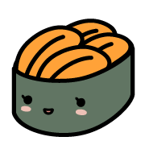

SUSHIYUKI emojis

- https://awayuki.github.io/emoji/v1-001.png

- https://awayuki.github.io/emoji/v1-002.png

- https://awayuki.github.io/emoji/v1-003.png

- https://awayuki.github.io/emoji/v1-004.png

- https://awayuki.github.io/emoji/v1-005.png

- https://awayuki.github.io/emoji/v1-006.png
- https://awayuki.github.io/emoji/v1-007.png

- https://awayuki.github.io/emoji/v1-008.png
- 
- https://awayuki.github.io/emoji/v1-009.png

- https://awayuki.github.io/emoji/v1-010.png
- https://awayuki.github.io/emoji/v1-011.png

- https://awayuki.github.io/emoji/v1-012.png

- https://awayuki.github.io/emoji/v1-013.png

- https://awayuki.github.io/emoji/v1-014.png

- https://awayuki.github.io/emoji/v1-015.png

- https://awayuki.github.io/emoji/v1-016.png

- https://awayuki.github.io/emoji/v1-017.png

- https://awayuki.github.io/emoji/v1-018.png
- https://awayuki.github.io/emoji/v1-019.png

- https://awayuki.github.io/emoji/v1-020.png

- https://awayuki.github.io/emoji/v1-021.png

- https://awayuki.github.io/emoji/v1-022.png
- https://awayuki.github.io/emoji/v1-023.png

- https://awayuki.github.io/emoji/v1-024.png

- https://awayuki.github.io/emoji/v1-025.png
- https://awayuki.github.io/emoji/v1-026.png
- https://awayuki.github.io/emoji/v1-027.png

- https://awayuki.github.io/emoji/v1-028.png

- https://awayuki.github.io/emoji/v1-029.png

- https://awayuki.github.io/emoji/v1-030.png

- https://awayuki.github.io/emoji/v1-031.png

- https://awayuki.github.io/emoji/v1-032.png

- https://awayuki.github.io/emoji/v1-033.png
- https://awayuki.github.io/emoji/v1-034.png

- https://awayuki.github.io/emoji/v1-035.png
- https://awayuki.github.io/emoji/v1-036.png
- https://awayuki.github.io/emoji/v1-037.png

- https://awayuki.github.io/emoji/v1-038.png

- https://awayuki.github.io/emoji/v1-039.png
- https://awayuki.github.io/emoji/v1-040.png

- https://awayuki.github.io/emoji/v2-001.png

- https://awayuki.github.io/emoji/v2-002.png

- https://awayuki.github.io/emoji/v2-003.png

- https://awayuki.github.io/emoji/v2-004.png
- https://awayuki.github.io/emoji/v2-005.png

- https://awayuki.github.io/emoji/v2-006.png

- https://awayuki.github.io/emoji/v2-007.png

- https://awayuki.github.io/emoji/v2-008.png
- https://awayuki.github.io/emoji/v2-009.png

- https://awayuki.github.io/emoji/v2-010.png

- https://awayuki.github.io/emoji/v2-011.png

- https://awayuki.github.io/emoji/v2-012.png

- https://awayuki.github.io/emoji/v2-013.png
- https://awayuki.github.io/emoji/v2-014.png

- https://awayuki.github.io/emoji/v2-015.png

- https://awayuki.github.io/emoji/v2-016.png

- https://awayuki.github.io/emoji/v2-017.png

- https://awayuki.github.io/emoji/v2-018.png

- https://awayuki.github.io/emoji/v2-019.png

- https://awayuki.github.io/emoji/v2-020.png

- https://awayuki.github.io/emoji/v2-021.png

- https://awayuki.github.io/emoji/v2-022.png

- https://awayuki.github.io/emoji/v2-023.png
- https://awayuki.github.io/emoji/v2-024.png

- https://awayuki.github.io/emoji/v2-025.png

- https://awayuki.github.io/emoji/v2-026.png
- https://awayuki.github.io/emoji/v2-027.png

- https://awayuki.github.io/emoji/v2-028.png

- https://awayuki.github.io/emoji/v2-029.png

- https://awayuki.github.io/emoji/v2-030.png

- https://awayuki.github.io/emoji/v2-031.png

- https://awayuki.github.io/emoji/v2-032.png

- https://awayuki.github.io/emoji/v2-033.png

- https://awayuki.github.io/emoji/v2-034.png
- https://awayuki.github.io/emoji/v2-035.png

- https://awayuki.github.io/emoji/v2-036.png

- https://awayuki.github.io/emoji/v2-037.png

- https://awayuki.github.io/emoji/v2-038.png

- https://awayuki.github.io/emoji/v2-039.png

- https://awayuki.github.io/emoji/v2-040.png